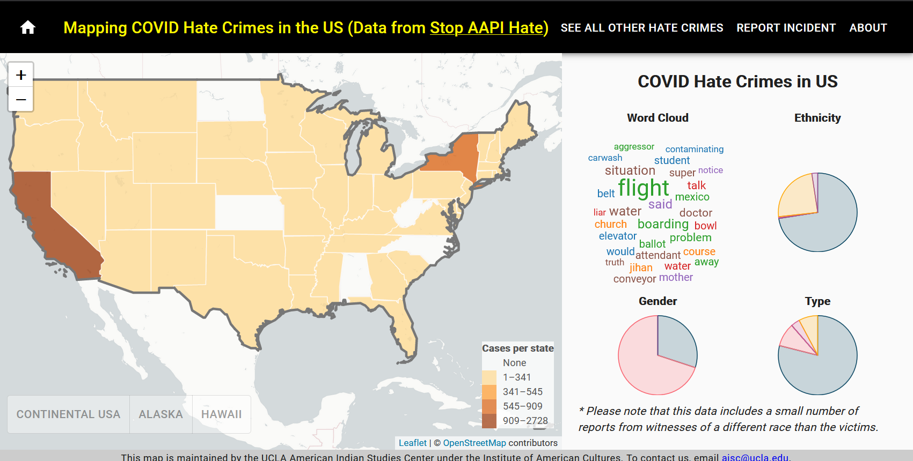

Syllabus¶
Welcome to the syllabus and course material for Web Development and GIS for Social Change: Critical Data for Transforming Civil Society.
Class Details¶
Asian American Studies Department, Spring, 2023
Tuesdays, Thursdays 2:00PM – 3:15PM
Public Affairs 2400A
Instructor¶
Albert S. Kochaphum (albertkun@ucla.edu)
Office Hours¶
Tuesdays, Thursdays 3:15pm – 4pm in Public Affairs 2400A and online by appointment below:
Preparation¶
- Fill out the pre-course survey before the first day of instruction (4/4/2023).
Please note: This syllabus is subject to change.¶

(Lam, C., Kochaphum, A., UCLA HateCrimeMap, 2020)
“Maps have always been made; they may have been one of the first forms of human communication. Maps exist in many forms, can represent different ideas and are used for many purposes. In choosing what to represent, how to represent it and what not to represent, maps are expressions of power.”
–Logan Cochrane, Jon Corbett and Peter Keller, Impact of Community-based and Participatory Mapping
Course Description¶
Welcome to our journey into web programming and mapping! This course is designed for non-mappers and non-coders to bridge the divide between spatial data and using it in the non-profit world for activism.
Spatial data is all around us, whether its survey information with zip codes or the various landmarks that comprise what people consider their neighborhood. While maps, like census tracts or political boundaries are traditionally extensions of authorities of power, participatory mapping seeks to break down those barriers. The objective of this course is to put mapping into the hands of students so that they can transfer these skills and frameworks to civil society.
The way COVID-19 played out in the United States underscored the institutional problems related to health, inequality, and the environment in the United States of America. The global crisis of climate change reinforces the institutional racism and environmental issues that have proliferated far beyond the U.S. national borders. Given all these issues, more so than ever, civil society is needed to build the coalitions and reassess priorities to usher in an era of political change.
Mapping and data are transformative tools that strengthen these connections between coalitions because they are representations of the physical world around us. However, in non-profits and other fields of civic engagement, these tools are underutilized or simply seen as tools “left to the experts”. This course prepares students to be informed digital citizens and transfer these tools for practical application in civil society. The two main objectives for this course are:
- To walk away with technical web development skills relevant to mapping for civil society
- To apply an ethical mapping framework to such projects.
Course Objectives¶
-
Undertake analysis that are informed by critical data studies, participatory frameworks, social fieldwork, and ethical considerations.
-
Learn transferable technical data and mapping skills as applied through action-oriented, collaborative, and project-based research.
-
Learn to critically assess datasets, digital mapping/ visualization technologies for use in non-profits
-
Learn to create an interactive web map that uses community-based data from a non-profit or community-based organization
-
Perform a data needs assessment for non-profits for an interactive map that enhances the mission/goals of the organization
-
Learn to work in research teams in order to conceptualize, design, carry out, and deliver persuasive arguments through presenting a web site that includes a web map and other digital media.
Course materials¶
Dougherty, J. and Ilyankou, I. “Hands-On Data Visualization: Interactive Storytelling from Spreadsheets to Code” O’Reilly Media, Inc. (2021). Available at https://handsondataviz.org/
Remote Learning Expectations for Students¶
Info
Though in-person attendence is recommended, lectures will be recorded and provided to students.
Even though remote learning has been in session for a few years now, we find ourselves in a hybrid situation. For students attending online, please respectful of various difficulties associated with teaching both in an offline and online setting that others may have. I hope that you will communicate with me if you experience anything in this course that does not support an inclusive environment. You can also report any incidents you may witness or experience online the Office of Equity, Diversity, and Inclusion on their website. Basic Zoom protocols for this course are as follows:
-
Mute microphones when not talking
-
Feel free to use the chat to ask questions at any time
-
Ensure that your preferred name and pronouns are included in your Zoom name
-
Though encouraged, video cameras are optional
- If cameras are turned off, please provide a profile picture, this will help me to identify you throughout the course
Lab Requirements¶
Lab assignments will require Microsoft Visual Studio Code in addition to Git and a GitHub account. Firefox is the official web browser for the class. Use of other software is allowed but not supported (i.e. you are on your own to troubleshoot).
Please be sure to have required software installed prior to lab sessions. Reach out if there are any installation issues or concerns before labs.
Lab Assistance¶
While the goal in the course is to ease everyone into GIS and writing code, I understand that the process may be intimidating and difficult. Rest assured that your success is my success, and I will try my best in making a learning environment that breaks down these initial barriers. We all have gone through the same struggles learning new technology, and I strongly encourage you get help as often as possible. Steps for troubleshooting technical problems can often be solved by a quick online search or reviewing lab materials for a misstep. The class community discussion forums is another resource for help. Regardless, do not hesitate to reach out to me for help.
Assignments and Evaluation¶
Students will be evaluated based on individual lab assignments, participation, and team based final project. Students are expected to attend all lectures and labs each week.
- 45% = Group project and assignments
- 45% = Individual class assignments
- 10% = Preparation and participation in class
| Task | Number of items | Points | Total Points | Total Grade |
|---|---|---|---|---|
| Individual assignments | 15 | 30 | 450 | 45% |
| Final Project and Presentation | 1 | 250 | 250 | 25% |
| Group Project Assignments | 4 | 50 | 200 | 20% |
| Participation | 100 | 10% | ||
| Grand Total | 1000 | 100% |
Participation¶
While participation is somewhat subjective, as long as you are active in the course you should not worry. The following are examples of active participation: - Participating in class discussions - Asking questions on the GitHub discussion board - Helping other students on the discussion board - Coming to office hours - Overall class attendence
Extra Credit¶
Extra credit will be given to students that provide exceptional work or contributions throughout the course. Optional assignments are opportunities for extra credit as well.
Course Expectations¶
UCLA’s Office for Equity, Diversity, and Inclusion provides resources, events, and information about current initiatives at UCLA to support equality for all members of the UCLA community. I hope that you will communicate with me if you experience anything in this course that does not support an inclusive environment, and you can also report any incidents you may witness or experience on campus to the Office of Equity, Diversity, and Inclusion.
I expect you to take advantage of the opportunities that this course offers you by being an active and thoughtful participant in all sections and lectures, by coming to lecture and section prepared, and by trying your best on the various elements of the course. I expect you to take ownership of your learning and to reach out to me if you are struggling or have concerns. I expect you to take the opportunity to learn from your peers through activities in lecture and section, and I expect you to be respectful and courteous to one another. Finally, I expect you to hold yourself to the highest standards for academic honesty and integrity in your work.
Course Outline¶
| Week | Topics |
|---|---|
| 1 | Introduction to GIS, data, and ethics |
| 2 | Critical Cartography and Civil Society |
| 3 | Open Source and Web Mapping |
| 4 | Society, Technology, and Ethics |
| 5 | Developing for Civil Society |
| 6 | Human-Centered Design | 7 | From Design to Data Justice | 8 | Mentorship and Collaboration | 9 | Connecting Activism and Technology | 10 | Beyond Web Development and Social Change | Finals | Final presentations |
Student Resources for Support and Learning¶
Providing feedback¶
I encourage your feedback at any time throughout the quarter about things that are helping you learn or difficult concepts. Please communicate with me if there are ways that we can improve the course to better support student learning.
COVID-19 Accomodations¶
While in-person learning and attendence is strongly encouraged, class lectures will be recorded and provided to all students. To make up for in-person attendence, students are expected to be active on the class discussion board and/or Discord. Feel free to reach out at any point in the quarter if your situation changes and you require further accomodations.
Personal Problems¶
I understand that sometimes life makes it difficult to focus on schoolwork, especially during COVID-19 times. If you are having a personal problem that affects your participation in this course, please talk to me to create a plan. Please do not wait until the end of the quarter to share any challenges that have negatively impacted your engagement and academic performance. The sooner we meet, the more options we will have available able to discuss to support your overall academic success.
Academic Accommodations Based on a Disability¶
Students needing academic accommodations based on a disability should contact the Center for Accessible Education (CAE) at (310)825-1501 or in person at Murphy Hall A255. When possible, students should contact the CAE within the first two weeks of the term as reasonable notice is needed to coordinate accommodations. For more information visit www.cae.ucla.edu.